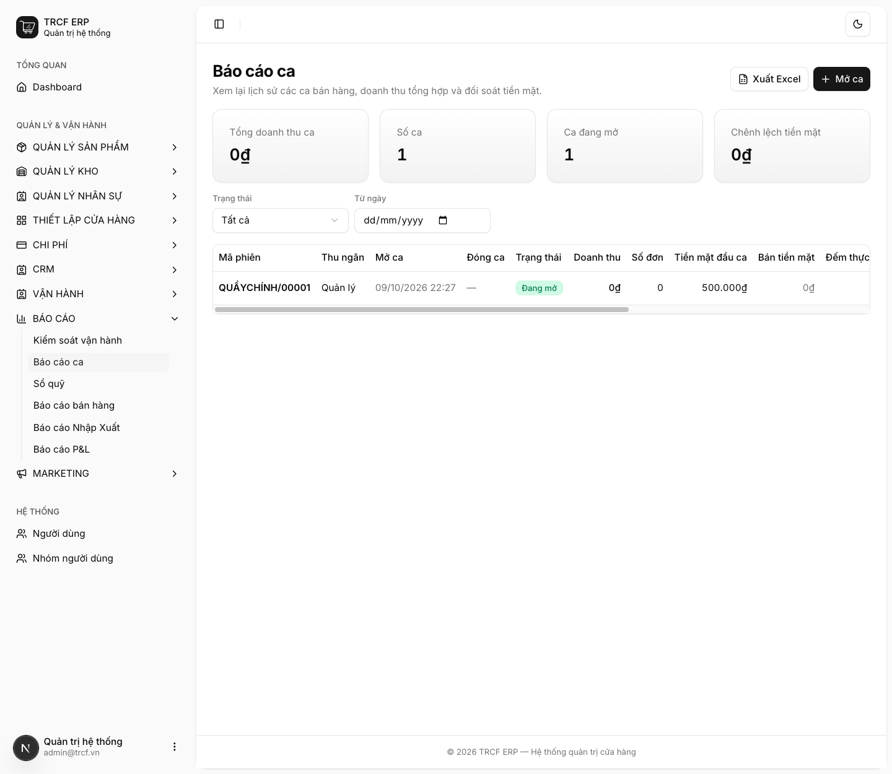
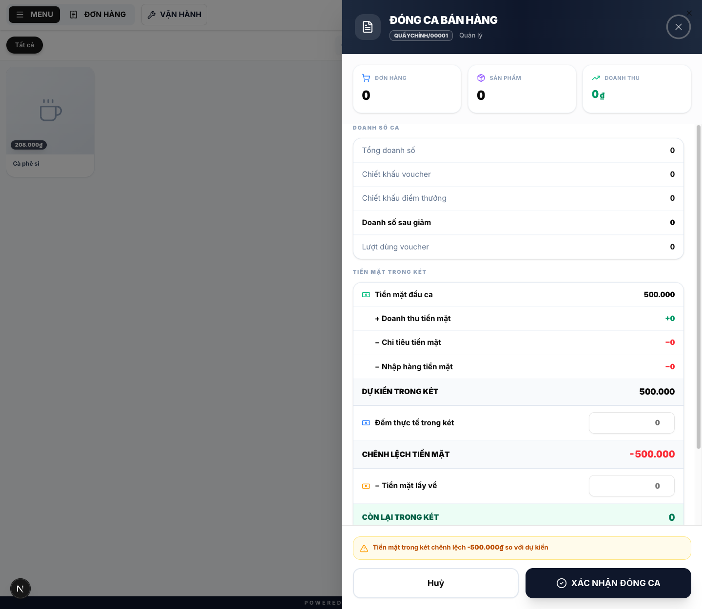
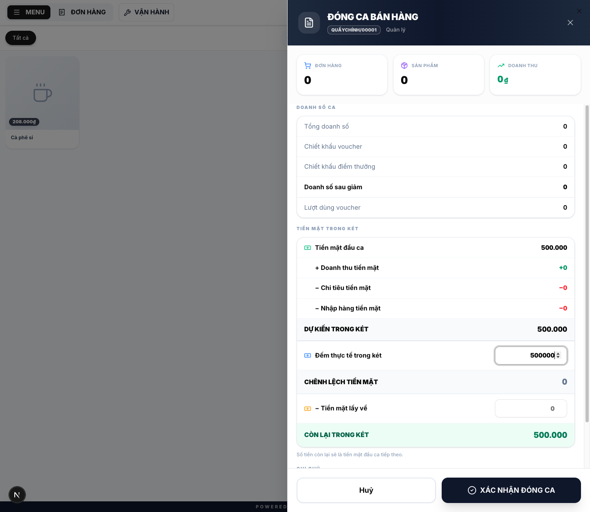
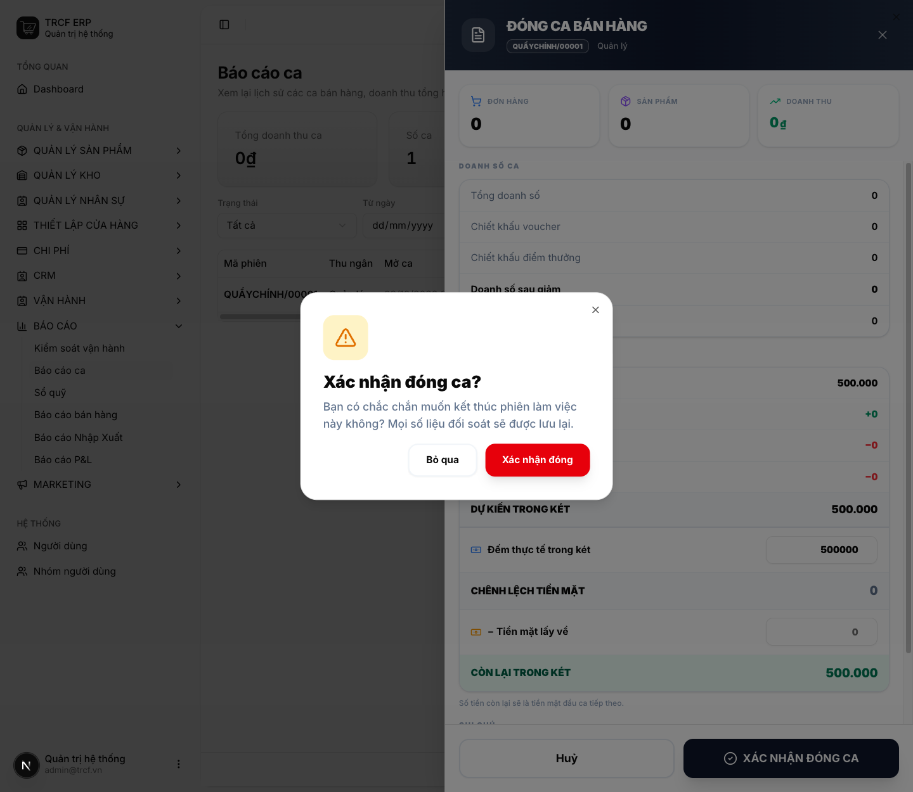
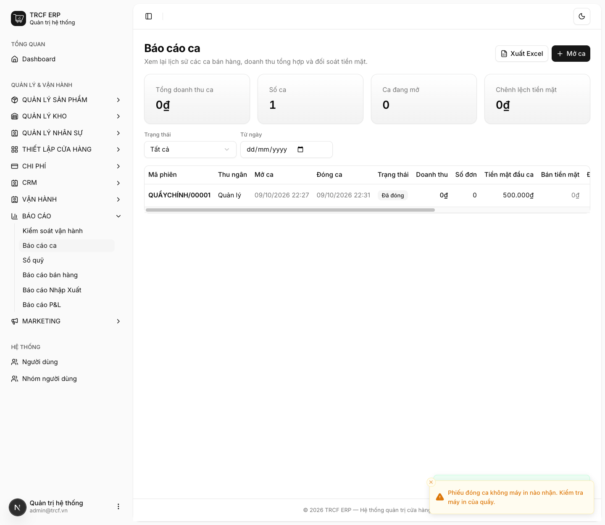

Chương 5 · Quy trình bán hàng tại quầy
5.4 Kiểm kê doanh thu và đóng phiên
1. Đường dẫn vào chức năng
Menu trái: Báo cáo → Báo cáo ca → nút Đóng ca (ở dòng ca đang mở) (địa chỉ /pos-sessions).
- Khi nào: cuối mỗi ca, dành khoảng 15 phút.
- Cũng đóng được ở màn bán hàng, nút Đóng ca trên thanh trên cùng.
2. Ví dụ nền và các bước thực hiện
Ví dụ: ca "QUẦYCHÍNH/00001" mở với 500.000 tiền đầu ca, chưa có đơn nào.
- Dự kiến trong két: "500.000".
- Đếm thật trong két: "500.000" → chênh lệch "0".
- Không lấy tiền về: "Tiền mặt lấy về" giữ "0".
Bước 1Mở Báo cáo ca
- Bấm Báo cáo ở menu trái, chọn Báo cáo ca.
- Dòng ca đang mở có nút Đóng ca.
- Bốn ô trên cùng: tổng doanh thu ca, số ca, số ca đang mở, chênh lệch tiền mặt.
- Bấm Đóng ca.

Bước 2Xem số liệu của ca
- Xem ba ô trên cùng: ĐƠN HÀNG, SẢN PHẨM, DOANH THU.
- Xem khung DOANH SỐ CA: tổng doanh số, chiết khấu, lượt dùng voucher.
- Xem khung TIỀN MẶT TRONG KÉT: đầu ca, doanh thu tiền mặt, chi tiêu, nhập hàng.
- Đọc DỰ KIẾN TRONG KÉT: hệ thống tính sẵn.

Bước 3Đếm két thật
- Đếm tiền thật trong két.
- Đếm thực tế trong két: nhập "500000".
- Chênh lệch hiện ngay ở CHÊNH LỆCH TIỀN MẶT.
- Tiền mặt lấy về: nhập số tiền chủ quán lấy ra khỏi két (nếu có), không thì giữ "0".
- CÒN LẠI TRONG KÉT: số này thành tiền đầu ca của ca sau.
- Ghi chú: nhập lý do nếu có chênh lệch (tuỳ chọn).
- Bấm XÁC NHẬN ĐÓNG CA.

Bước 4Xác nhận lần cuối
- Hộp Xác nhận đóng ca? hiện ra.
- Bấm Xác nhận đóng để đóng ca.
- Bấm Bỏ qua nếu chưa muốn đóng.

Bước 5Kiểm tra kết quả
- Dòng ca chuyển sang Đã đóng, có giờ đóng ca.
- Cột Đếm thực tế = "500.000₫", Chênh lệch = "0₫".
- Cột Còn lại trong két = "500.000₫".
- Xem lại ca bất kỳ lúc nào bằng nút Chi tiết.

3. Giải thích các trường
Các cột đối soát
| Cột / ô | Nghĩa |
|---|---|
| Hệ thống | Số hệ thống ghi nhận cho phương thức đó |
| Thực tế | Số bạn đếm hoặc đối chiếu được |
| Chênh lệch | Tự tính = Thực tế − Hệ thống |
| Tiền mặt lấy về | Số tiền chủ quán lấy ra khỏi két khi đóng ca |
| Còn lại trong két | Số ở lại két, trở thành Tiền mặt đầu ca của ca sau |
Số dự kiến trong két = tiền đầu ca + doanh thu tiền mặt − chi tiêu tiền mặt − nhập hàng tiền mặt
Có chênh lệch thì kiểm gì
- Có đơn nào thu tiền mặt mà bấm nhầm sang chuyển khoản không?
- Có khoản chi nào lấy từ két mà quên lập phiếu chi không? (mục 6.1)
- Có ai lấy tiền lẻ đổi mà chưa bỏ lại không?
Với phương thức không tiền mặt: đối chiếu cột Hệ thống với sao kê hoặc máy POS ngân hàng, rồi nhập số thật vào cột Thực tế.
4. Lưu ý quan trọng
⚠️
Ca đã đóng không mở lại được, không có nút xoá ca.
- Ca là chứng từ đối soát.
- Đóng nhầm thì mở ca mới.
⚠️
Để lại tiền lẻ cho ca sau thì nhập đúng số đó làm Tiền mặt đầu ca của ca mới.
- Tiền không cộng dồn ảo qua từng ngày.
💡
Chênh lệch không chặn đóng ca. Con số chênh được ghi vào báo cáo ca cho quản lý xem sau, nhưng nên kiểm trước khi đóng.
💡
Liếc ô chênh lệch tiền mặt trên màn Báo cáo ca mỗi tuần.